Main observation
Theorem
Let \(f\) be a submodular function on at least 7 vertices. If all minimum \(3\)-partition are \(2\)-size, then every minimum non-trivial \(2\)-partition is noncrossing with some minimum \(3\)-partition.
\(\newcommand{\N}{\mathbb{N}} \newcommand{\Z}{\mathbb{Z}} \newcommand{\R}{\mathbb{R}}\)
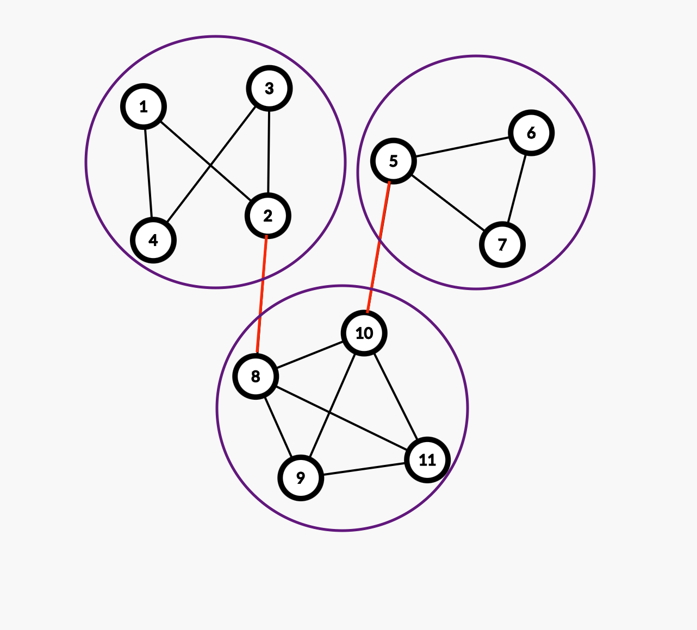 \(G=(V,E)\) is a graph.
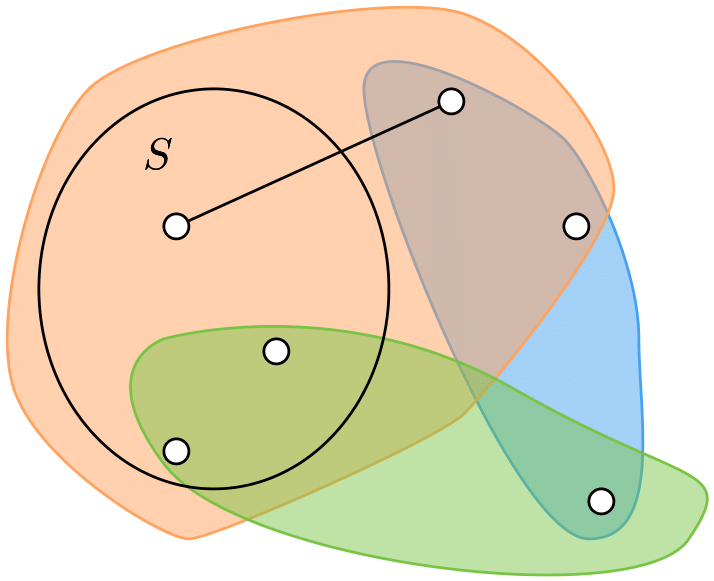
Deletion: Solve \(j\)-partition on \(f_{\setminus X}\) and \(k-j\)-partition on \(f_{\setminus (V\setminus X)}\) where \(0<j<k\).
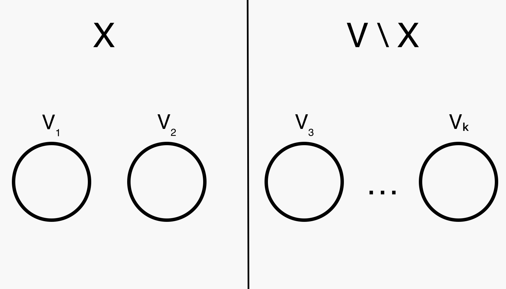Contraction: Solve \(k\)-partition on \(f_{/X}\), such that \(X\) does not cross some minimum \(k\)-partition.
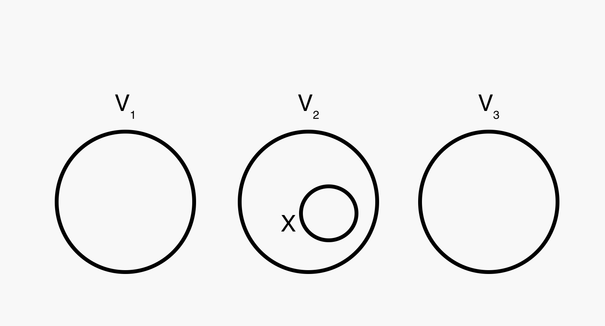| Technique | Graph | Hypergraph | Submodular |
|---|---|---|---|
| Deletion | \(k\) | \(k\) | ? |
| Contraction | \(k\) (randomized) | \(k\) (randomzied) | 3 |
| Tree Packing | \(k\) | \(k\) (constant rank) | ? |
| Technique | Graph | Hypergraph | Submodular |
|---|---|---|---|
| Deletion | \(k\) | \(k\) | ? |
| Contraction | \(k\) (randomized) | \(k\) (randomzied) | 4 |
| Tree Packing | \(k\) | \(k\) (constant rank) | ? |
\(\tau(n)\) time to minimize a submodular function on \(n\) vertices.
Theorem
There exists a \(O(n^6\tau(n))\) time algorithm for submodular 4-partition.
Theorem
There exists a \(O(n^{14}\tau(n))\) time algorithm for symmetric submodular 5-partition.

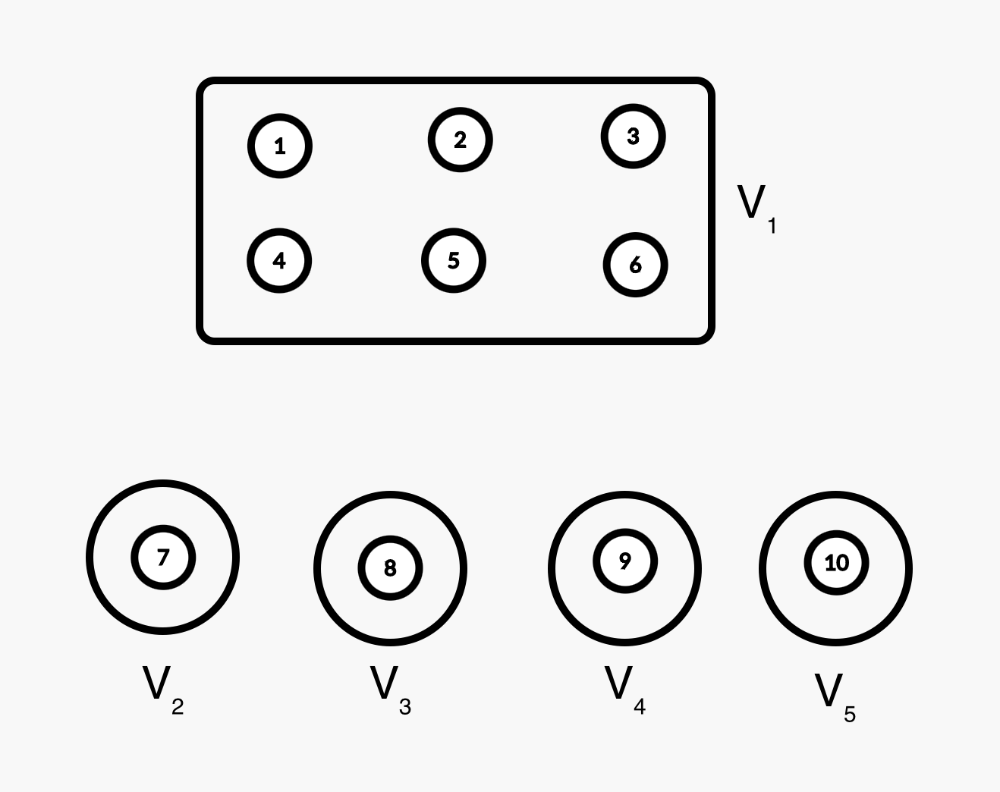
A partition \({\cal X}\) is noncrossing with a partition \({\cal Y}\) if there is a component of \(\mathcal{X}\) that is contained in some component of \(\mathcal{Y}\).
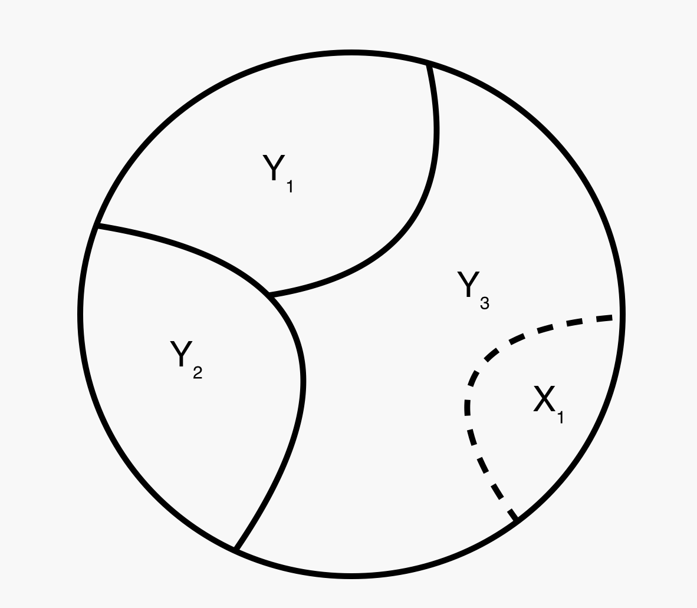Theorem
Let \(f\) be a submodular function on at least 7 vertices. If all minimum \(3\)-partition are \(2\)-size, then every minimum non-trivial \(2\)-partition is noncrossing with some minimum \(3\)-partition.
\[\begin{align*} T(n) &= \max_{\substack{a+b=n\\ 1\leq a\leq b \leq n-2}} T(a+1)+T(b+1)+O(n \tau(n))\\ &= O(n^2 \tau(n)) \end{align*}\]
Theorem
Let \(f\) be a submodular function on at least 7 vertices. If all minimum \(3\)-partition are \(2\)-size, then every minimum non-trivial \(2\)-partition is noncrossing with some minimum \(3\)-partition.
A configuration between two partitions \(\mathcal{X}\) and \(\mathcal{Y}\) is a matrix \(M\) such that \(M_{i,j} = |X_i\cap Y_j|\).
\(\mathcal{X}\) a minimum non-trivial \(2\)-partition. \(\mathcal{Y}\) a minimum \(3\)-partition that is \(2\)-size.
\(n^+\) means at least \(n\), \(n\) means exactly \(n\). \(X_1\subset Y_1\). DONE.
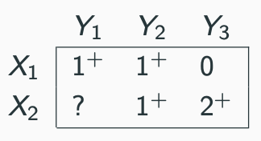
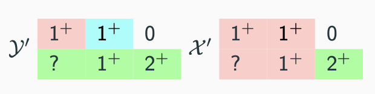
\[\begin{align*} &f(\mathcal{X})+f(\mathcal{Y})\\ =&f(X_1)+f(X_2)+f(Y_1)+f(Y_2)+f(Y_3)\\ \geq& f(X_1\cap Y_1) + f(X_1\cup Y_1)+f(X_2)+f(Y_2)+f(Y_3)\\ \geq& f(X_1\cap Y_1) + f(X_1\cup Y_1\cup Y_2)+f(X_1\cap Y_2) \\ &+f(X_2)+f(Y_3)\\ =& f(\mathcal{X'})+f(\mathcal{Y'}) \geq f(\mathcal{X})+f(\mathcal{Y}) \end{align*}\]
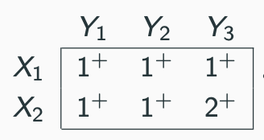
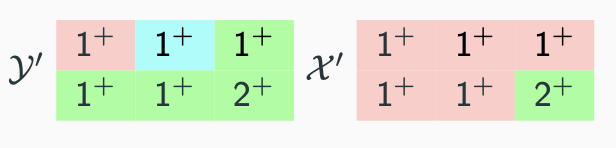
\(\mathcal{X}\) is noncrossing with \(\mathcal{Y}'\).
Definition (Noncrossing)
A partition \({\cal X}\) is noncrossing with a partition \({\cal Y}\) if there is a component of \(\mathcal{X}\) that is contained in some component of \(\mathcal{Y}\).
Definition (Compatible)
A partition \(\mathcal{X}\) is compatible with partition \(\mathcal{Y}\), if there are \(|\mathcal{X}|-1\) components of \(\mathcal{X}\) that each is contained inside some component of \(\mathcal{Y}\).
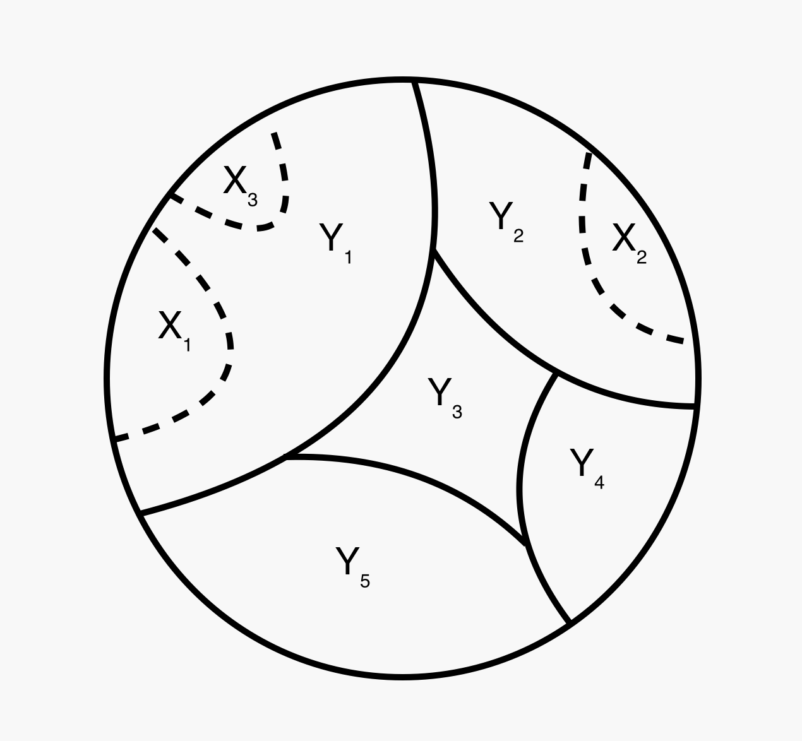 Noncrossing = Compatible if \(|\mathcal{X}|=2\).
Theorem
Let \(f\) be a submodular function on at least \((2\times 3)+1\) vertices. If all minimum \(3\)-partition are \(2\)-size, then every minimum non-trivial \(2\)-partition is compatible with some minimum \(3\)-partition.
Theorem
Let \(f\) be a submodular function on at least \((3\times 4)+1\) vertices. If all minimum \(4\)-partition are \(3\)-size, then every minimum non-trivial \(3\)-partition is compatible with some minimum \(4\)-partition.
Compatible allows us to contract \(|\mathcal{X}|-1\) sets at the same time.
\[\begin{align}T(n) &= \max_{\substack{a_1+a_2+a_3=n\\ 1\leq a_1\leq a_2\leq a_3\leq n-3}} \sum_{i=1}^3 T(a_i+2)+O(n^5\tau(n))\\ &= O(n^6\tau(n)). \end{align}\]
Theorem
Let \(f\) be a submodular function on at least \((3\times 4)+1\) vertices. If all minimum \(4\)-partition are \(3\)-size, then every minimum non-trivial \(3\)-partition is compatible with some minimum \(4\)-partition.
Conjecture
Every min-\(3\)-partition is compatible with some min-\(4\)-partition.
Encode the space of submodular function on \(12\) elements through linear constraints. Let \(x_S\) to be the variable encode the value of \(f\) on set \(S\).
Conjecture
Let \(f\) be a submodular function on at least \((k-1)\times k+1\) vertices. If all minimum \(k\)-partition are \(k-1\)-size, then every minimum non-trivial \(k-1\)-partition is compatible with some minimum \(k\)-partition.
FALSE! Even for graphs!

All edge has weight \(2\), except the light edge, which has weight \(1\).